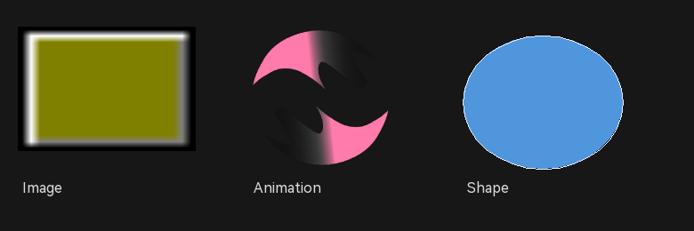
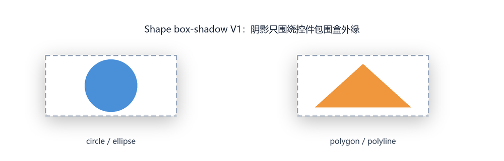

17 图片、动画与绘制
这类控件依赖资源文件或绘制参数，属性面板之外还要检查资源提供者和路径。正式交付前建议在预览中确认资源能正常加载，再导出工程。

17.1 图片 Image
17.1.1 准备资源
- 把图片所在目录加入资源提供者，见 资源管理。
- 假设提供者名称为
demo，图片文件为images/logo.png。 - 图片路径填写为
provider:demo/images/logo.png。
属性面板中的图片路径示例：
provider:demo/images/logo.png17.1.2 常用属性
| 项目 | 说明 |
|---|---|
| 图片路径 | 优先使用 provider 相对路径；也可以使用运行时资源 ID（如果已配置） |
| 缩放方式 | stretch（默认拉伸）、fit-center（等比完整显示并居中）、center-crop（等比裁切填满）、none（原始尺寸）、tile（平铺） |
| 透明/背景 | PNG 透明通道是否保留；是否需要底色 |
| 源矩形 | 只显示图片的一部分时设置 source rect（如支持） |
17.1.3 常见问题
| 现象 | 检查 |
|---|---|
| 图片空白 | 提供者名称、相对路径、大小写、文件是否随导出包复制 |
| 图片变形 | 控件宽高比、缩放方式；不要同时依赖拉伸和固定尺寸 |
| 图片被裁切 | 父 Panel 的 clip-children、控件 rect 或源矩形 |
| 导出后路径失效 | 导出目录的资源结构；绝对路径只在当前机器有效 |
17.2 动画 Animation
17.2.1 准备 LuotiAni 资源
Animation 读取的是 LuotiAni 的 JSONC 描述文件，不是单张图片。JSONC 内部还会引用帧图片等资源，因此整个动画目录都需要能被资源提供者解析。
provider:demo/animations/button.jsonc- 把动画目录加入资源提供者（例如
demo）。 - 放置 Animation，在动画路径属性中填写 JSONC 路径。
- 设置是否自动播放、是否循环；需要外部控制时保持 playing 关闭。
- 在预览中观察帧变化和控件尺寸；导出后检查动画资源是否随包复制。
17.2.2 常用属性
| 项目 | 说明 |
|---|---|
| 动画路径 | JSONC 文件路径；相对路径基于资源提供者 |
| playing | 是否播放/暂停；运行时可通过代码切换 |
| loop | 播放到最后一帧后是否循环 |
| frame / total-frames | 当前帧和总帧数，通常用于调试或进度显示 |
| 尺寸 | 空路径时可能使用 JSONC overview 的画布尺寸；建议显式设置控件 rect |
17.3 图形 Shape
17.3.1 形状类型与生效属性
在属性面板“常规”组的“图形类型”下拉中选择形状；修改后立即写回引擎并进入撤销栈。也可以在 JSON 中写 "shape": "circle" 等。下拉框下方会显示当前类型实际生效的属性；切换类型后属性行会重新生成，不适用的字段不再出现，避免“改了半径却看不到变化”。
| 类型 | 用途 | 生效属性 |
|---|---|---|
rect | 普通矩形边框 | fill / stroke / line-width |
filled-rect | 填充矩形 | fill |
round-rect | 圆角矩形 | fill / stroke / line-width / radius |
circle / ellipse | 圆/椭圆，适合图标底、状态点 | fill / stroke / line-width / ring-width |
polyline | 折线；需要点集 | stroke / line-width / points |
polygon | 多边形；需要点集 | fill / stroke / line-width / points |
要点：
radius只对round-rect生效；圆/椭圆/多边形的“半径”由控件矩形决定，面板不再生成半径行。ring-width只对circle/ellipse生效；数值大于 0 时填充变成环带（内部透明），设为 0 才是实心。filled-rect不绘制描边；需要边框时用rect或round-rect。polyline不填充；fill行不会出现。points只对polyline/polygon生效：折线至少 2 个点，多边形至少 3 个点。clip（默认 true）：单图元与primitives的绘制裁剪到控件 rect，越界部分不会覆盖相邻控件；clip=false保留旧溢出行为。裁剪不影响box-shadow、背景、边框和子控件。
17.3.2 颜色、点集与多图元
Shape 的填充、描边和线宽通过属性面板设置。多边形/折线的点集一行一个点，坐标相对 Shape 控件左上角：
0,80
80,0
160,80上面的点集表示一个三角形：左下 → 顶部中间 → 右下。点集只对 polyline/polygon 有意义，矩形/圆形不需要手写点集。
在一个 Shape 中组合多个图元
Shape 支持多图元：primitives 非空时，引擎用图元列表替代顶层单图元绘制。属性面板的“多图元”分组提供结构化列表编辑：
- “＋ 添加图元”追加一个图元（默认 rect，坐标取控件尺寸的一半）；每个图元右侧有“删除”按钮。
- 图元标题可点击收起/展开（标题前的
[+]/[-]表示状态）；图元较多时用“收起全部图元 / 展开全部图元”快速折叠，只保留标题行。 - 每个图元一组字段控件：形状下拉、X / Y / 宽 / 高、填充色、描边色、线宽；按图形类型还会出现圆角半径、环带宽度、顶点。
- 字段行按该图元的形状过滤：例如 round-rect 才有圆角半径，circle/ellipse 才有环带宽度，polyline/polygon 才有顶点。
- 顶点使用行式文本，一行一个点
x,y，坐标相对 Shape 左上角。 - 所有修改立即写回引擎并进入撤销栈；添加/删除图元后列表自动重建。
保存到布局 JSON 时仍是标准的 primitives 数组（便于导出/版本管理）：
"primitives": [
{ "shape": "round-rect", "rect": [10, 50, 130, 75], "radius": 6, "fill": "#34D399" },
{ "shape": "polygon", "fill": "#EF4444",
"points": [{"x":0,"y":52}, {"x":75,"y":0}, {"x":150,"y":52}] }
]- 图元键与引擎 JSON 一致：
shape/rect（[x,y,w,h]）/fill/stroke/line-width/radius/ring-width/points；注意是 kebab-case。 - 坐标相对 Shape 左上角，随控件缩放；图元矩形或点集超出控件 rect 时，属性面板显示橙色警告。Shape 的
clip默认 true，超出部分会被裁剪到控件 rect；显式clip=false时保留旧溢出行为（会画到控件外，可能覆盖相邻控件）。 primitives非空时，顶层的填充/描边/线宽等单图元属性不再参与绘制，属性面板会隐藏这些顶层单图元字段，只保留“图元列表”；逐个删除全部图元即可回到单图元模式并恢复字段。- 图元列表按“前 → 后”显示：最上面是前景图元，最下面是背景图元。每个图元标题右侧的“上移”= 前移一层，“下移”= 后移一层，也可删除。引擎按
primitives数组顺序绘制（后者覆盖前者），面板显示顺序与数组顺序相反。 - 多图元与单图元共用撤销栈：同一字段连续修改按同一个键合并。
- 放置 Shape，选择形状类型。
- 设置填充色、描边色和线宽；需要透明填充时把填充 alpha 设为 0。
- polyline/polygon 在点集行填写坐标，每行
x,y。 - 需要组合图形时，在“多图元”分组点击“＋ 添加图元”，再逐个设置形状与字段。
- 在预览中检查形状边界和尺寸；复杂图形建议改用 SVG/图片资源。
17.3.3 柔光阴影（box-shadow，V1 包围盒）
Shape 可以使用通用 box-shadow：属性面板的“轮廓阴影”组、主题规则和 JSON 写法与其他控件一致。阴影绘制在外框外侧，不影响填充、描边、布局和命中。
V1 只按 Shape 控件的包围盒 rect 绘制阴影，不沿 polygon/polyline 点集或 circle/ellipse 轮廓生成。因此圆形、椭圆和多边形的阴影表现为控件矩形/圆角矩形周围的光晕，而不是形状边缘的轮廓发光。虚线框仅用于示意包围盒。

- 颜色 alpha=0 关闭阴影；状态阴影按通用规则部分继承 normal。
- Shape 通常没有 hover/pressed 交互态；状态阴影主要由主题或程序状态变化触发。
- 需要沿点集/轮廓的发光时，当前 V1 不支持；不要用
box-shadow冒充轮廓光，后续应以独立的shape-glow/contour-glow方案评估。
17.3.4 事件与使用建议
- Shape 常作为装饰或命中区域；需要点击时确认该形状是否参与普通命中。
- 用圆角矩形做卡片底时，把圆角半径和父容器内边距一起考虑。
- 大量点集或复杂图形优先使用图片/SVG，避免在 Designer 中维护长点集。
17.4 资源提供者与导出
- 资源提供者只保存“名称 → 目录”的映射，不会自动把文件复制到工程目录。
- 资源引用使用
provider:名称/路径，名称和路径区分大小写。 - 导出工程时检查生成目录中的资源结构和路径；缺失资源通常表现为空白或回退图形。
- 修改资源目录后，重新打开预览并检查所有引用该资源的控件。
17.5 媒体控件自检
- 图片/动画路径是否使用 provider 相对路径。
- 控件尺寸是否与资源宽高比匹配，是否被父容器裁切。
- 动画是否 playing、loop 设置正确，帧是否正常显示。
- Shape 的颜色、线宽和点集是否符合预期；切换图形类型后确认属性行已随之变化。
- Shape 的 radius 只在 round-rect 生效、ring-width 只在 circle/ellipse 生效、points 只在 polyline/polygon 生效。
- 使用多图元时，确认“多图元”分组中每个图元的形状、矩形、颜色和点集都正确；逐个删除可回到单图元模式。
- Shape 的 box-shadow 是否按包围盒显示；圆形/多边形不要误期望轮廓发光。
- 预览通过后再导出，并在导出目录中再运行一次。